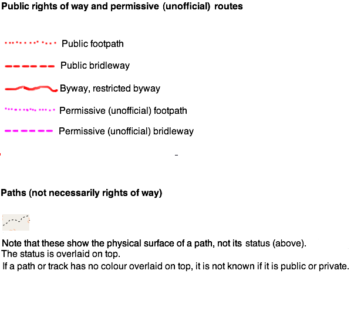

What is Freemap?
Freemap is a project to create free and annotatable maps of the UK countryside, using OpenStreetMap data to create the maps. Freemap maps aim to show not only the official rights of way, but all paths with public access, many of which are missing on other maps.
- Map key
- Using Freemap's interactive features - how to annotate the map and create walking routes.
- The map isn't showing! Why?
- History and technical details
- Source code
- Back to map
Map key
The following diagram shows the colour scheme for different types of path (permissive footpaths, not shown here, are light blue):
The maps consist of two layers. The top layer (coloured) shows the routes with public access, as shown above. The lower layer (black and white) gives an indication of the path's physical condition, for example whether it's a dirt path, a track, or a farm access road. The second diagram shows examples of the lower layer, and also shows a permissive footpath:

Note how some paths and tracks have no coloured overlay. These are paths and tracks for which walkers' rights are unknown, i.e. it is not known whether they are walkable or private. Also note the public footpath in the top centre of the map, and how its southern end follows a farm access road and its northern end follows a track.
Using Freemap's interactive features
Freemap maps are interactive and allow you to:
- Click on a feature and get information about it;
- Annotate a feature with text, e.g. provide more information about a point of interest such as a hill or pub;
- Annotate a right of way or permissive path, e.g. provide path directions or other info, such as the location of a good view or a problem such as a muddy path or path blockage;
- Click on a right of way and see all the annotations relating to that right of way.
- Draw your own walk route and automatically get a description of it, ready to take on a walk. This feature, not fully implemented yet, will use the annotations mentioned above above a self-describing walk route.
Getting information about a feature
In "normal" mode (you can select the mode at the top of the map) simply click on the feature, such as a hill or a pub icon. Info about that feature will then be displayed, assuming someone has added some that is....
Annotating a feature
Make sure you've signed up for an account and log in. Select "Annotate" mode and click on the feature. You'll then be prompted to enter the information.
Annotating a right of way or permissive path
Again, ensure you're signed up, and login. Select "Annotate" mode and click on the right of way at the position where you want to add the annotation; it should become highlighted in yellow. Add your text, select which direction the annotation applies to (can be both) and click Go. Note that at the moment, this only works with official rights of way and permissive paths; it will not work on other paths and tracks, or roads. The basic rule is: if it's coloured on the map, you can annotate it!
Getting information about a right of way or permissive path
In "normal" mode, you can click on a right of way or permissive path and see all the annotations relating to that path. So if you want to find out whether a particular path has interesting views, or any problems, this is an easy way to do it!
Walking routes
Freemap also allows you to create self-describing walk routes (note, this functionality is new and prone to glitches at the moment). You can select "Route" mode and then draw your route. Freemap can use the path annotations described above to auto-generate a walking route description which you can print off and take on a walk. The walking route is available in HTML and PDF format, as well as an XML format intended for a (planned!) Freemap Android application which you'll be able to upload to your phone and use for in-the-field navigation. If you are logged in, you can also save your route to Freemap for later retrieval.
Looking further ahead still, it is planned to link Freemap's walking route functionality to OpenTrailView.
The map isn't showing! Why?
If the map doesn't show immediately, it's because the map for that area needs to be rendered (drawn) as no-one has viewed that part of the country for a while. This will take time so please bear with it! If you return to that area in 15 seconds or so, you should find the map drawn.
History and technical details
Freemap history
Freemap basically started up in 2004 more or less at the same time as OSM itself, but originally used its own database. My original motivation was that I wanted to illustrate some long-distance walks I did across England and Wales around the turn of the millennium, but found that I could not do that with OS maps without paying expensive licencing fees. So I thought it might be a good idea to create my own maps based on GPS data. Then in early 2005 I met Steve and contributed my data to OSM; Freemap then used OSM data for its maps, the maps still being rendered on the Freemap server, originally using PHP/GD and later using Mapnik.
In the past two or three years, though, the increasing volume of UK OSM data meant that I was encountering memory issues with osm2pgsql import which even slim mode would not counteract, and had to take drastic action such as cutting out London, Birmingham, Manchester etc leading to strange white holes on the map - not to mention a nightmare import procedure with erratic tiles designed to avoid the large cities. But even that only worked for a while...
Luckily however, Chris Jones of Swansea University Computer Society very generously offered to host the tiles, which has led to Freemap development resuming, so great thanks to him! I also took the opportunity to re-design the maps to more clearly show the differentiation between legal rights and physical condition of paths, described above.
Technical details
Here is a description of how Freemap is maintained, should you be interested.
- A PostGIS database on the SUCS server (see above) is used for the rendering, together with a custom Mapnik stylesheet (available in OSM SVN here).
- For Freemap's interactive features, a smaller scale PostGIS database is also present on the Freemap server itself. As the SUCS database covers the whole world, database queries are rather slow. So to counteract that, a pared-down database exists on Freemap containing relevant points of interest (currently places, hills, pubs and restaurants), rights of way (defined as anything with a designation tag) and permissive paths (anything with foot=permissive and highway=footway,path,track or service). This is done by downloading the UK OSM extract from geofabrik.de, and then using Osmosis to extract the relevant information and osm2pgsql to import to the database. So far, so good...
- Path annotations are linked directly to their associated OSM way in the database by OSM ID. However a potential problem exists in that the OSM ID could change over time, for example a way might be divided into two or deleted and redrawn. To attempt to minimise this, it is planned to write some software which goes through the annotations when the database is reloaded, sees if the way with the given OSM ID still exists, and if it doesn't, reassigns the annotation to the nearest way of the same type (footpath, bridleway etc) as the original way.
- A different approach to solving this problem is taken with POIs. When a POI is annotated, its position (some error is allowed), name and POI type is stored in an additional table, together with the annotation. So when a POI is clicked, first the POI is located in the planet_osm_point table, and then this additional table is searched using the POI's name, type and location to see if a matching annotation exists.
Source code
Freemap source code is available in OSM SVN, under sites/free-map.org.uk.